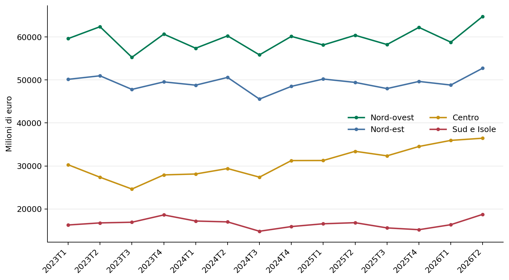
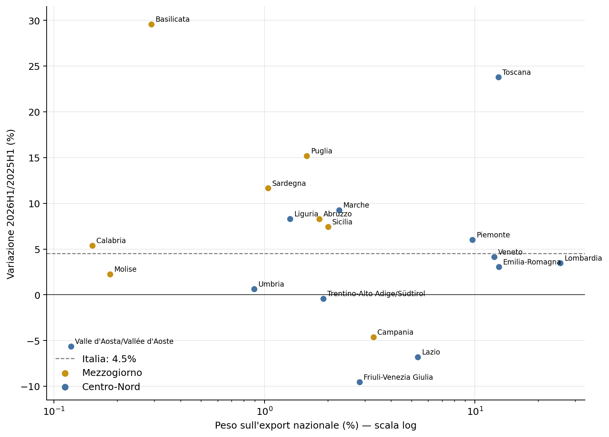
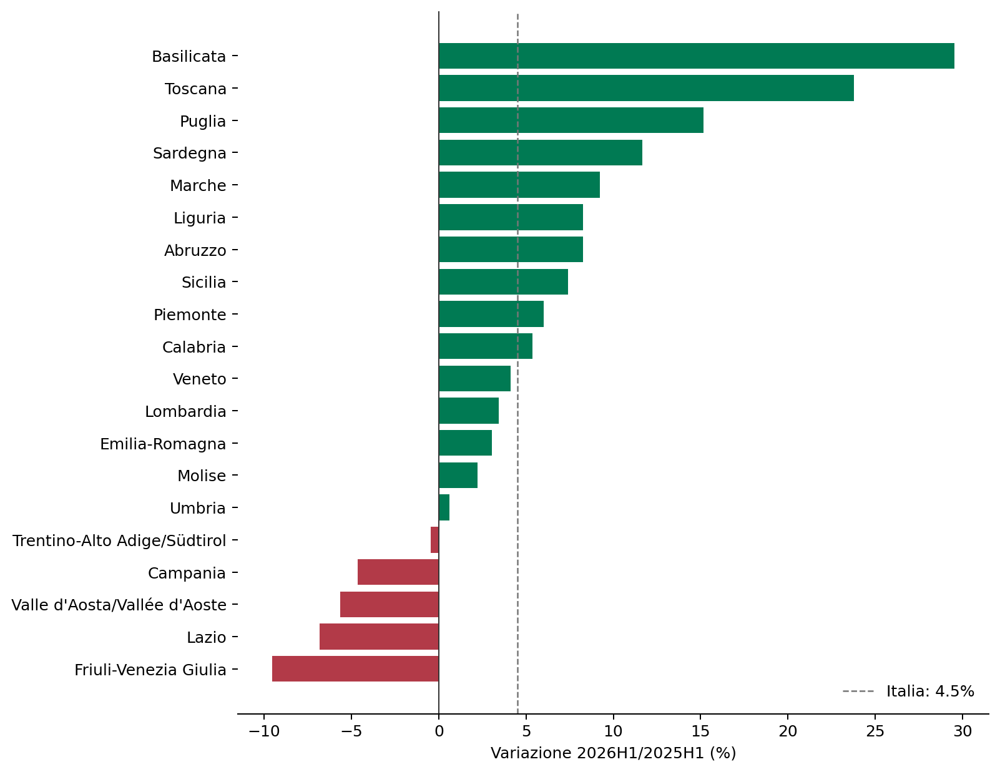
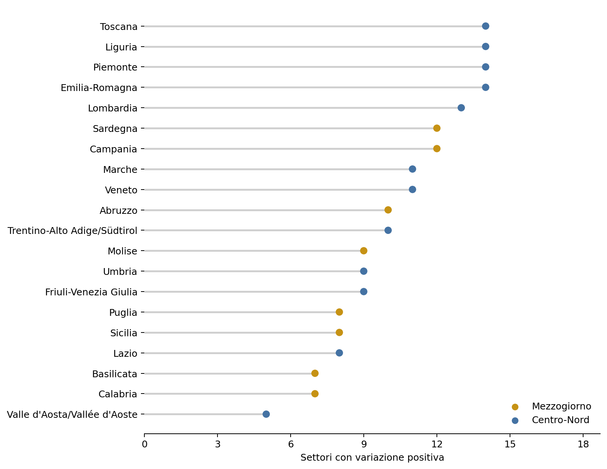
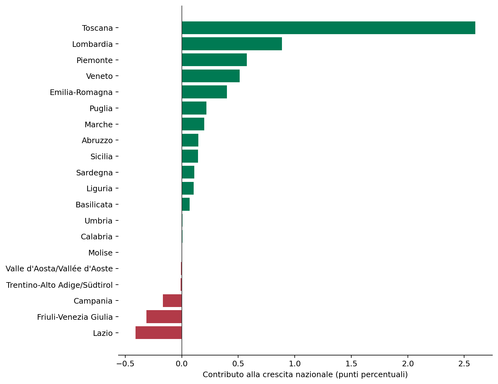
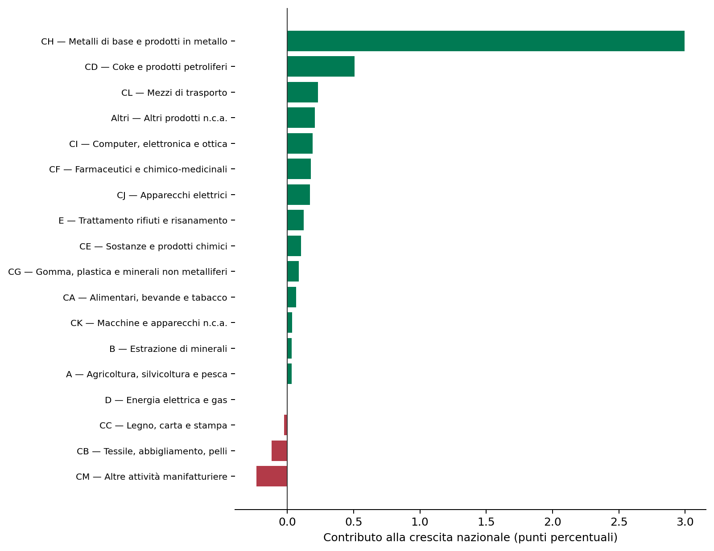
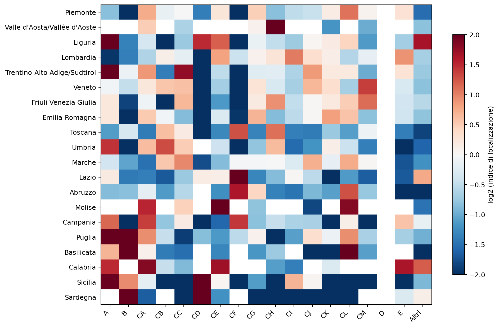
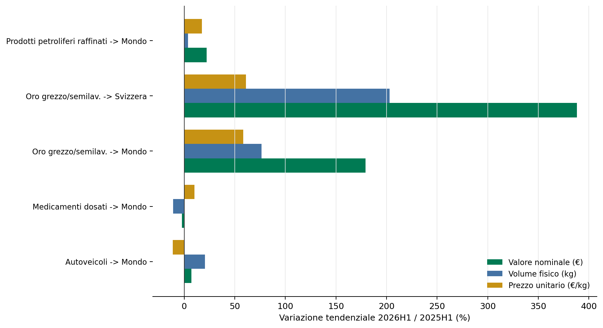
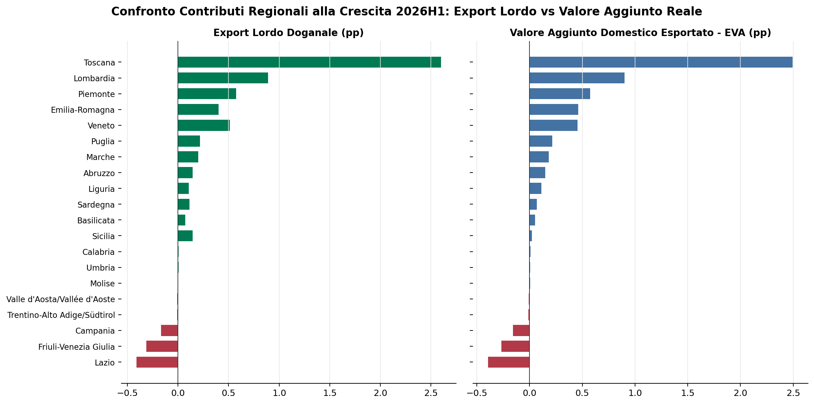
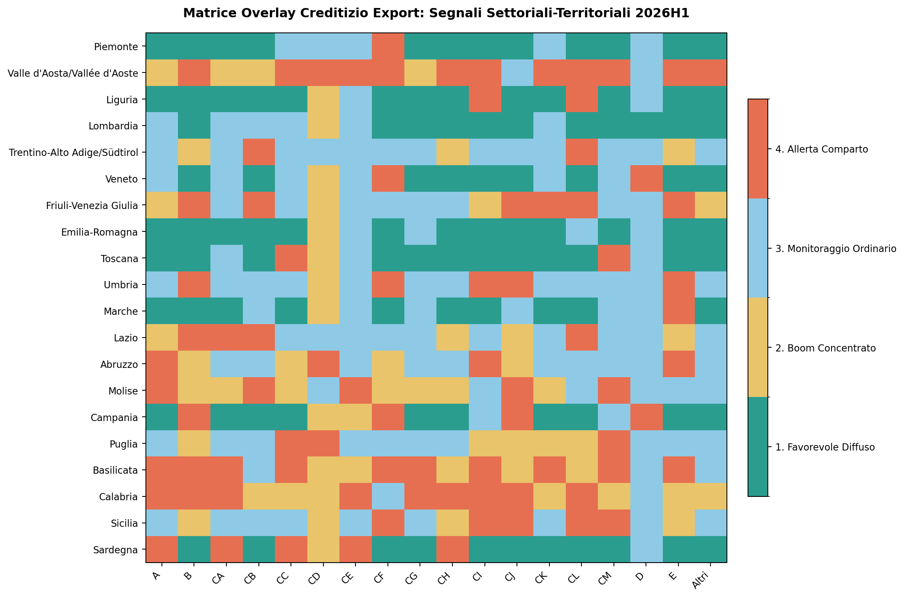

| Ripartizione | Q2 destag. (mln €) | Q2/Q1 (%) | Q2 2026/Q2 2025 (%) |
|---|---|---|---|
| Nord-ovest | 62.724 | +2,9 | +7,2 |
| Nord-est | 51.148 | +3,1 | +6,7 |
| Centro | 35.702 | -1,6 | +9,1 |
| Sud e Isole | 17.953 | +6,5 | +11,6 |
Tabella 1: Quadro per ripartizione nel secondo trimestre 2026
II trimestre 2026: crescita, diffusione settoriale e divari territoriali
Paolo Volterra ![]()
Nel primo semestre 2026 le esportazioni italiane crescono in valore, ma il risultato nazionale aggrega traiettorie regionali e settoriali molto diverse. Il documento confronta peso, crescita, contributo e ampiezza settoriale delle venti regioni, distingue la dinamica congiunturale da quella tendenziale e misura quanto l’aumento complessivo sia concentrato in pochi flussi. Il Mezzogiorno guida la crescita sul trimestre ma conserva un peso contenuto; nel semestre emergono, accanto al caso eccezionale dei metalli toscani, contributi diffusi nel Nord e performance vivaci in diverse regioni meridionali.
esportazioni, regioni italiane, commercio estero, Ateco, specializzazione
L’11 settembre 2026 l’Istat ha pubblicato la nuova edizione de Le esportazioni delle regioni italiane, riferita al secondo trimestre. Il rilascio comprende il comunicato, le serie trimestrali per ripartizione e le tavole del primo semestre per regione e attività economica. Offre quindi due letture complementari: il movimento congiunturale tra primo e secondo trimestre, corretto per la stagionalità, e il confronto tendenziale tra i primi sei mesi del 2026 e lo stesso periodo del 2025 (Istituto Nazionale di Statistica 2026b).
Il dato di apertura è una crescita nazionale in valore del 4,5% nel semestre. Preso da solo, tuttavia, questo numero nasconde differenze rilevanti per dimensione regionale, velocità, composizione e diffusione settoriale. L’analisi che segue sviluppa questi quattro piani senza assumere che la regione con il maggiore contributo rappresenti l’intero sistema esportatore.
Nel secondo trimestre 2026 l’export aumenta in termini congiunturali in tre ripartizioni su quattro. Sud e Isole registrano l’incremento più forte; il Centro arretra rispetto al trimestre precedente, pur mantenendo una crescita tendenziale sostenuta. Le due misure non sono in contraddizione: la prima confronta trimestri consecutivi su dati destagionalizzati, la seconda lo stesso trimestre di due anni adiacenti su dati grezzi (Istituto Nazionale di Statistica 2026b).
| Ripartizione | Q2 destag. (mln €) | Q2/Q1 (%) | Q2 2026/Q2 2025 (%) |
|---|---|---|---|
| Nord-ovest | 62.724 | +2,9 | +7,2 |
| Nord-est | 51.148 | +3,1 | +6,7 |
| Centro | 35.702 | -1,6 | +9,1 |
| Sud e Isole | 17.953 | +6,5 | +11,6 |
Tabella 1: Quadro per ripartizione nel secondo trimestre 2026
La leadership congiunturale del Mezzogiorno va letta insieme ai livelli: nel primo semestre il Sud rappresenta il 7,3% e le Isole il 3,1% dell’export nazionale. Il loro peso congiunto è dunque circa il 10,4%, mentre Nord-ovest e Nord-est concentrano oltre due terzi dei flussi (Istituto Nazionale di Statistica 2026b).
La serie trimestrale mostra che il divario nei livelli è persistente. Evidenzia inoltre una stagionalità comune alle ripartizioni e consente di collocare il rimbalzo del secondo trimestre 2026 in una prospettiva più ampia del solo confronto con il trimestre precedente.

Esportazioni trimestrali per ripartizione territoriale, dal 2023 al secondo trimestre 2026. Dati grezzi, milioni di euro.
Una graduatoria costruita sulla sola crescita percentuale premia più facilmente regioni piccole; una fondata sul contributo privilegia le economie esportatrici maggiori. Per evitare entrambe le distorsioni, la tabella 2 affianca quattro dimensioni: quota sull’export nazionale, variazione tendenziale, contributo alla crescita italiana e numero di settori in aumento.
| Regione | Peso nazionale (%) | Crescita (%) | Contributo (pp) | Settori positivi (su 18) | Primo driver |
|---|---|---|---|---|---|
| Piemonte | 9,74 | 5,99 | 0,58 | 14 | CA — Alimentari, bevande e tabacco |
| Valle d’Aosta/Vallée d’Aoste | 0,12 | -5,66 | -0,01 | 5 | CA — Alimentari, bevande e tabacco |
| Liguria | 1,32 | 8,28 | 0,11 | 14 | CK — Macchine e apparecchi n.c.a. |
| Lombardia | 25,47 | 3,45 | 0,89 | 13 | CF — Farmaceutici e chimico-medicinali |
| Trentino-Alto Adige/Südtirol | 1,91 | -0,44 | -0,01 | 10 | CH — Metalli di base e prodotti in metallo |
| Veneto | 12,37 | 4,13 | 0,51 | 11 | CL — Mezzi di trasporto |
| Friuli-Venezia Giulia | 2,83 | -9,55 | -0,31 | 9 | CH — Metalli di base e prodotti in metallo |
| Emilia-Romagna | 13,01 | 3,03 | 0,40 | 14 | CH — Metalli di base e prodotti in metallo |
| Toscana | 12,95 | 23,77 | 2,60 | 14 | CH — Metalli di base e prodotti in metallo |
| Umbria | 0,90 | 0,62 | 0,01 | 9 | CB — Tessile, abbigliamento, pelli |
| Marche | 2,27 | 9,23 | 0,20 | 11 | CL — Mezzi di trasporto |
| Lazio | 5,36 | -6,83 | -0,41 | 8 | CH — Metalli di base e prodotti in metallo |
| Abruzzo | 1,82 | 8,27 | 0,15 | 10 | CF — Farmaceutici e chimico-medicinali |
| Molise | 0,18 | 2,23 | 0,00 | 9 | CA — Alimentari, bevande e tabacco |
| Campania | 3,30 | -4,65 | -0,17 | 12 | CL — Mezzi di trasporto |
| Puglia | 1,59 | 15,16 | 0,22 | 8 | CL — Mezzi di trasporto |
| Basilicata | 0,29 | 29,55 | 0,07 | 7 | CL — Mezzi di trasporto |
| Calabria | 0,15 | 5,36 | 0,01 | 7 | CK — Macchine e apparecchi n.c.a. |
| Sicilia | 2,01 | 7,41 | 0,15 | 8 | CD — Coke e prodotti petroliferi |
| Sardegna | 1,04 | 11,64 | 0,11 | 12 | CD — Coke e prodotti petroliferi |
Tabella 2: Profilo comparato delle regioni, primo semestre 2026
La geografia che emerge non è riconducibile a un solo territorio. Basilicata, Toscana e Puglia hanno i tassi di crescita più elevati; Lombardia, Piemonte, Veneto ed Emilia-Romagna incidono per la combinazione fra dimensione e dinamica; Sardegna e Sicilia beneficiano soprattutto dei prodotti petroliferi; Lazio, Friuli-Venezia Giulia e Campania sottraggono crescita al totale nazionale.
Il rapporto fra peso e crescita chiarisce la differenza tra velocità e impatto. Le regioni collocate più a destra hanno una base esportatrice maggiore; quelle sopra la linea tratteggiata crescono più della media italiana. La scala logaritmica serve a rendere leggibili nello stesso spazio regioni con quote molto diverse.

Peso sull’export nazionale e crescita tendenziale delle regioni nel primo semestre 2026. L’asse orizzontale è in scala logaritmica.

Crescita tendenziale dell’export regionale nel primo semestre 2026. Valori percentuali.
La crescita regionale complessiva può dipendere da un unico comparto. Il numero di settori positivi offre una misura semplice della sua ampiezza. Piemonte, Liguria, Emilia-Romagna e Toscana presentano 14 aggregati in aumento su 18; anche la Campania ne conta 12, pur chiudendo il semestre in flessione a causa del peso delle componenti negative. Il segno del totale e la diffusione settoriale raccontano quindi aspetti distinti.

Ampiezza settoriale della crescita: aggregati Ateco in aumento su 18.
I contributi combinano dimensione iniziale e variazione. La loro somma ricostruita è leggermente diversa dal +4,5% ufficiale perché quote e tassi nelle tavole sono pubblicati con arrotondamenti. Essi vanno pertanto interpretati come stime additive, non come una quadratura sui valori elementari non arrotondati.

Contributo stimato delle regioni alla crescita nazionale dell’export. Punti percentuali.
Il grafico rende visibile un elemento eccezionale: il contributo della Toscana è molto superiore a quello delle altre regioni. Non rappresenta però l’intero quadro territoriale; è un caso specifico da isolare per comprendere perché la crescita aggregata italiana sia più forte della dinamica del suo perimetro residuo.
La stessa scomposizione per attività economica identifica il comparto che genera questa eccezione e, insieme, mostra quali settori sostengono o frenano il risultato nazionale. Anche questi contributi sono stime basate sulle quote pubblicate arrotondate.

Contributo stimato dei settori Ateco alla crescita nazionale dell’export. Punti percentuali.
L’indice di localizzazione confronta il peso di un settore nell’export regionale con il peso dello stesso settore nell’export italiano. Un valore superiore a uno segnala una specializzazione relativa, non necessariamente un vantaggio competitivo o una maggiore produttività.

Specializzazione delle regioni per settore Ateco nel primo semestre 2026. Il colore rappresenta il logaritmo in base 2 dell’indice di localizzazione.
Le specializzazioni più nette riguardano la raffinazione in Sardegna e Sicilia, i mezzi di trasporto in Basilicata, la farmaceutica nel Lazio e in Abruzzo, l’agroalimentare in Calabria e Campania, la meccanica in Emilia-Romagna e Veneto. Queste configurazioni aiutano a leggere sia le accelerazioni sia le cadute: una forte specializzazione amplifica gli effetti di shock e commesse settoriali (Istituto Nazionale di Statistica 2026b).
Nel primo semestre 2026 la crescita nazionale è particolarmente concentrata. La sola combinazione Toscana × metalli contribuisce per circa 2,38 punti percentuali; escludendo lo stesso perimetro in entrambi gli anni, la crescita del residuo è stimata intorno al 2,2%. Escludendo l’intero aggregato dei metalli, scende intorno all’1,7%.
| Perimetro | Crescita (%) |
|---|---|
| Totale osservato | 4,53 |
| Senza Toscana × CH | 2,18 |
| Senza settore CH | 1,71 |
| Senza flussi territorialmente non attribuiti | 5,19 |
Tabella 3: Crescita osservata e perimetri depurati
L’approfondimento sulle statistiche bilaterali Eurostat COMEXT chiarisce la natura economica di questo fenomeno (Eurostat 2026): - Il flusso trainante della Toscana verso la Svizzera è costituito da oro grezzo e semilavorato (HS 7108), le cui esportazioni nazionali verso la Confederazione Elvetica sono balzate da 1,7 a 8,3 miliardi di euro (+388,0%). La scomposizione logaritmica dimostra che l’aumento combina una triplicazione dei volumi fisici (+202,9%, da 21,9 a 66,3 tonnellate) con un’impennata del valore unitario medio da 77.443 a 124.790 €/kg (+61,1%), trainata dalle quotazioni record dell’oro. - Nei prodotti petroliferi raffinati (CD, HS 2710), driver di Sicilia e Sardegna, l’81% della crescita del fatturato estero (+22,2%) è invece spiegato dall’aumento dei prezzi medi e dei margini di raffinazione (+17,6%), a fronte di volumi fisici sostanzialmente stabili (+3,9%).

Scomposizione delle variazioni tendenziali 2026H1/2025H1: valore nominale, volumi fisici e valore unitario medio per i flussi guida.
Le destinazioni doganali e i fornitori a monte offrono un secondo indizio nella stessa direzione. Fra i quattro flussi guida individuati nel semestre, l’oro è quello con il mercato di sbocco più concentrato: la sola Svizzera assorbe il 72,9% dell’export nazionale del codice (indice di Herfindahl 0,55, equivalente a meno di due destinazioni indipendenti), contro una diffusione nettamente maggiore per i petroliferi, le navi e i farmaceutici. La stessa piazza elvetica è anche, sul lato opposto del flusso, il primo fornitore dell’Italia per l’oro grezzo e semilavorato usato come materia prima (39,9% dell’import). Il flusso toscano si configura quindi, almeno in parte, come un circuito di lavorazione fra le stesse due economie — oro che entra dalla Svizzera, viene lavorato e certificato nel distretto orafo aretino e in parte vi ritorna — più che come un allargamento di mercato. I flussi petroliferi seguono un profilo diverso e più diffuso su entrambi i lati: in uscita nessun singolo mercato supera il 16% (Gibilterra, Spagna, Libia, Croazia, Francia, Egitto), e il greggio lavorato nelle raffinerie di Sicilia e Sardegna proviene da otto-nove paesi fornitori senza che nessuno superi il 18-20% (Azerbaigian, Libia, Stati Uniti, Kazakhstan, Iraq, Arabia Saudita) (Eurostat 2026; Gaulier e Zignago 2010).
Tabella 4. Concentrazione dei mercati di destinazione e di origine, primi due flussi per intensità di import
| Prodotto | Direzione | Primo partner | Quota | Indice Herfindahl |
|---|---|---|---|---|
| Oro grezzo/semilavorato (HS 7108) | Export | Svizzera | 72,9% | 0,55 |
| Oro grezzo/semilavorato (HS 7108) | Import (materia prima) | Svizzera | 39,9% | 0,20 |
| Petroliferi raffinati / greggio (HS 2710 / 2709) | Export | Gibilterra | 16,4% | 0,26 |
| Petroliferi raffinati / greggio (HS 2710 / 2709) | Import (greggio) | Azerbaigian | 18,4% | 0,11 |
Il dato doganale registra il valore lordo della merce alla frontiera: un euro di petrolio o di lingotti d’oro importati e riesportati appare equivalente a un euro di macchinario progettato e costruito interamente in Italia. Applicando i moltiplicatori delle tavole simmetriche Input-Output Istat (matrice di Leontief domestica \(L^d = (I - A^d)^{-1}\)), è possibile calcolare il coefficiente di Domestic Value Added (\(DVA_s\)) per ciascuna branca, isolando il valore aggiunto diretto e indiretto generato nell’economia nazionale per unità esportata (Istituto Nazionale di Statistica 2022).
La quota di ritenzione interna varia sensibilmente tra i comparti: - settori a forte ritenzione interna: arredo e altre manifatturiere (68,7%), macchine e apparecchi meccanici (64,7%), computer ed elettronica (64,5%), tessile e abbigliamento (65,2%), alimentari (59,3%); - settori ad alto contenuto di input esteri (import leakage): coke e raffinazione petrolifera (31,6% di DVA, con 68,4% di importazioni intermediate), chimica di base (42,6%), mezzi di trasporto (52,0%).
Pesando i flussi regionali per i coefficienti DVA, la crescita nazionale del Valore Aggiunto Domestico Esportato (EVA) si attesta a +4,26% (contro il +4,53% doganale). La graduatoria dei contributi territoriali si ricompone a favore della spina dorsale manifatturiera padana: Lombardia (+0,90 pp), Emilia-Romagna (+0,46 pp) e Veneto (+0,46 pp) guidano la creazione effettiva di ricchezza netta. Al contrario, l’apporto della Sicilia si riduce da +0,15 pp lordi a soli +0,02 pp reali, assorbito per oltre due terzi dall’acquisto di greggio estero.

Confronto tra contributi alla crescita 2026H1: export lordo doganale e Valore Aggiunto Domestico Esportato (EVA).
La fotografia territoriale del primo semestre 2026 ha quattro tratti. Primo, la crescita congiunturale è guidata da Sud e Isole, ma da una base che vale circa un decimo dell’export nazionale. Secondo, le regioni del Nord continuano a fornire contributi rilevanti grazie al loro peso, con andamenti settoriali generalmente diffusi e ad alta ritenzione di valore aggiunto. Terzo, alcune regioni meridionali registrano tassi elevati ma concentrati in specializzazioni specifiche ad alto contenuto importato. Quarto, il risultato italiano complessivo è amplificato da un flusso eccezionale nei metalli toscani, legato alla movimentazione di oro da investimento verso la Svizzera.
La lettura più equilibrata non oppone una regione alle altre: distingue dimensione, velocità, diffusione, prezzi e valore aggiunto reale. È questa pluralità di misure, più che una singola classifica, a descrivere la geografia dell’export italiano nel 2026.
I dati sulle esportazioni non misurano il merito creditizio di una singola impresa. Possono però arricchire la lettura di un portafoglio bancario come segnale esterno di contesto, soprattutto quando le esposizioni sono classificabili per sede, settore Ateco e mercato di sbocco. La loro utilità aumenta se vengono affiancati alle informazioni territoriali su produttività, redditività, leverage e andamento dei prestiti diffuse dall’Istat e dalla Banca d’Italia (Istituto Nazionale di Statistica 2026a; Banca d’Italia 2026).
Tabella 5. Dall’indicatore export all’impiego creditizio
| Evidenza osservata | Informazione per l’analisi | Possibile impiego nel credito | Verifica necessaria |
|---|---|---|---|
| Crescita ampia in molti settori | Miglioramento territoriale diffuso | Individuare comparti con possibile fabbisogno di circolante o investimento | Ordini, margini, capacità produttiva e flussi di cassa dell’impresa |
| Crescita concentrata in un solo settore | Dipendenza da un driver specifico | Evitare di trasferire il buon dato regionale a tutto il portafoglio | Peso effettivo del settore e durata del fenomeno |
| Export elevato ma volatile | Esposizione a commesse, prezzi o grandi operazioni | Calibrare linee autoliquidanti, anticipi export e covenant | Portafoglio ordini, concentrazione clienti e coperture |
| Flessione diffusa | Peggioramento del contesto commerciale | Rafforzare il monitoraggio dei comparti maggiormente esposti | Dati andamentali, arretrati, utilizzi e segnali d’impresa |
| Dipendenza da pochi mercati esteri | Rischio paese, cambio o domanda estera | Segmentare plafond e controlli per destinazione | Fatturato estero per paese e strumenti di mitigazione |
| Dipendenza da input importati | Rischio su costi, margini e capitale circolante | Valutare fabbisogni di liquidità sotto shock di prezzo o fornitura | Contratti di acquisto, scorte, pass-through e fornitori alternativi |
Incrociando dinamica tendenziale, diffusione settoriale regionale, specializzazione e quota di Valore Aggiunto Domestico, le 360 celle osservate (20 regioni × 18 settori Ateco) vengono classificate in quattro classi operative di rischio e intervento bancario:

Matrice di overlay creditizio settoriale-territoriale: classificazione delle 360 celle regione × Ateco per il risk management di portafoglio.
Tre cautele sono decisive. Primo, un flusso doganale è attribuito territorialmente secondo criteri statistici che non coincidono necessariamente con sede legale, unità produttiva e debitore bancario. Secondo, l’export è espresso in valore: prezzi, materie prime importate e operazioni commerciali possono aumentarlo senza un analogo miglioramento dei volumi o dei margini. Terzo, i dati aggregati non sostituiscono bilanci, Centrale dei rischi, informazioni andamentali e conoscenza della controparte.
L’impiego corretto è dunque quello di un overlay di portafoglio: orienta domande, segmentazione e monitoraggio, ma non produce automaticamente rating, affidamenti o decisioni sulla singola impresa. Il valore aggiunto del rilascio Istat consiste nel segnalare dove approfondire — quali territori, quali settori e quale grado di concentrazione — prima di entrare nel merito delle controparti.
Nota metodologica
Questo documento nasce dall’interazione di tre componenti. L’autore definisce le domande, esercita il giudizio critico e assume la responsabilità scientifica ed editoriale del risultato. Strumenti di intelligenza artificiale generativa sono impiegati a supporto della ricerca bibliografica, della lettura, della sintesi, della riorganizzazione argomentativa e della revisione del testo. Un’infrastruttura open source sviluppata dall’autore automatizza il reperimento, l’armonizzazione e il controllo dei dati dalle fonti statistiche ufficiali, e mantiene l’elaborazione documentata e riproducibile.
Le fonti sono pubblicamente accessibili e citate con la loro denominazione ufficiale; l’analisi è pertanto integralmente auditabile e replicabile da terzi a partire da esse. Le tabelle e i grafici sono elaborazioni dell’autore: calcoli, aggregazioni, trasformazioni e scelte di rappresentazione sono attribuibili all’autore e non agli enti produttori dei dati.
La responsabilità per le fonti utilizzate, le analisi condotte, le elaborazioni effettuate, le interpretazioni proposte e le conclusioni formulate resta interamente in capo all’autore. L’intelligenza artificiale è stata impiegata come ambiente di supporto cognitivo ed editoriale, non come fonte primaria, autore autonomo o sostituto del giudizio critico.